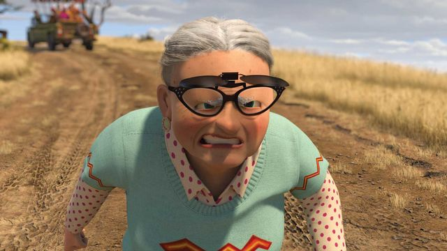

<
Nana
Nana!

Nana is a minor antagonist of Madagascar, the secondary antagonist of A Christmas Caper, the former secondary antagonist of Madagascar: Escape 2 Africa and the main antagonist in Madagascar: Escape 2 Africa (video game).
Nana seems to be incredibly resistant to injury (most likely due to body fat), as she was able to have a short fight with Alex right after being tugged out of the back of a speeding tour jeep as well as being thrown out of it a second time by the penguins, who reversed over her in the jeep after noticing that she didn't die. However, despite this evident resilience, she is still portrayed as a 'little old lady'; she has a waddling gait and is knocked onto her back when firing a rifle.